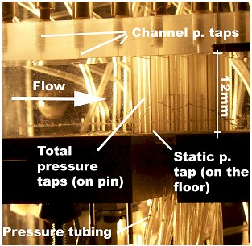
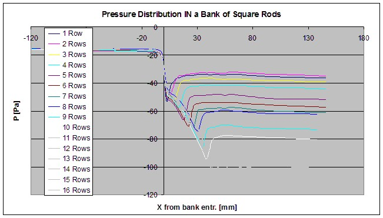

Modeling & Experiments of the Hydraulic Resistance & Heat Transfer of in-line Square Pin Fin Heat Sinks with Top By-pass flow |
|
Project TeamAlfonso Ortega and Mario Urdaneta Motivation |
|
|
The industrial interest on electronics cooling, due to even higher
transistor counts, smaller packaging and higher device densities brings
about the optimization of air cooling techniques. The availability of
air, and its compatibility with current electronic systems makes it the
first candidate for this purpose.. Project Description
 Figure 2 - SLA model on test rig, before testing
Recent Results
 Figure 3.- Pressure distribution inside a bank of pins vs. location from the channel entrance plane
Figure
3 shows the pressure distribution inside an array of tubes. The
progressive development of the flow gives better understanding and
characterization of the flow. The per-row pressure drop will vary until
fully development, when we can use infinitely long tube bank data. The
uncertainty of this data is <+/- 2% Publications Dogruoz,
M. B., Urdaneta, M., and Ortega, A., " Experiments and Modeling of the
Heat Transfer of In-Line Square Pin Fin Heat Sinks With Top By-pass
Flow," Proc., IMECE2002 ASME International Mechanical Engineering
Congress & Exposition, New Orleans, Louisiana, Paper # 2002-34245 |
|
 PDF
PDF